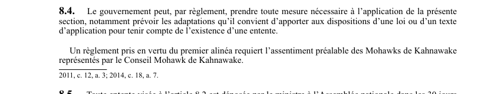

art-8.4-LSST : règlements entente Kahnawake
Un article du wiki ⚖️ Recueil législatif
En bref
Le gouvernement peut prendre tout règlement nécessaire à l'application de la section. Il s'agit d'une obligation.
- Assentiment préalable des Mohawks de Kahnawake requis.
🌐 LegisQuébec · 📄 PDF officiel (page 7)
Texte officiel : capture du PDF

Toucher l'image pour l'agrandir🔗 Ouvrir a cette page : LSST.pdf : page 7 · texte a jour au 26 mars 2024
Voir aussi
- art. 8.2 : entente avec Mohawks Kahnawake · la section autorise la mise en oeuvre d'une entente entre le gouvernement et les Mohawks de Kahnawake permettant un régime particulier, à condition que ce régime contienne des normes semblables à celles du régime institué par la loi.
- art. 8.3 : application entente malgré la loi · champ d'application : les dispositions d'une entente visée à l'article 8.2 s'appliquent malgré toute disposition contraire de la loi, à moins que l'entente n'en dispose autrement.
- art. 8.5 : dépôt entente Assemblée nationale · obligation : toute entente visée à l'article 8.2 est déposée par le ministre à l'Assemblée nationale dans les 30 jours de sa signature ou, si elle ne siège pas, dans les 30 jours de la reprise des travaux ; la commission compétente doit étudier l'entente.
- art. 8.6 : publication entente Kahnawake en ligne · toute entente est publiée sur les sites Internet du ministère du Travail, du ministère du Conseil exécutif et de la CNESST au plus tard à la date de son entrée en vigueur et jusqu'au cinquième anniversaire de sa cessation d'effet.
- ↑ Loi : LSST
Pages qui pointent ici (4)
- art-8.2-LSST : entente avec Mohawks Kahnawake Recueil législatif
- art-8.3-LSST : application entente malgré la loi Recueil législatif
- art-8.5-LSST : dépôt entente Assemblée nationale Recueil législatif
- art-8.6-LSST : publication entente Kahnawake en ligne Recueil législatif